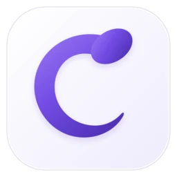
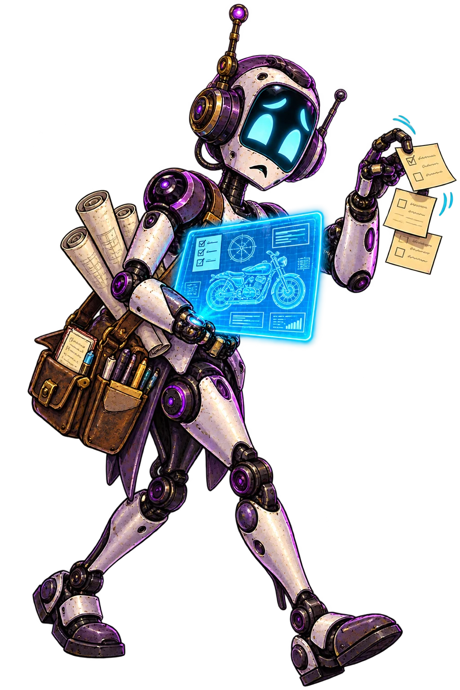
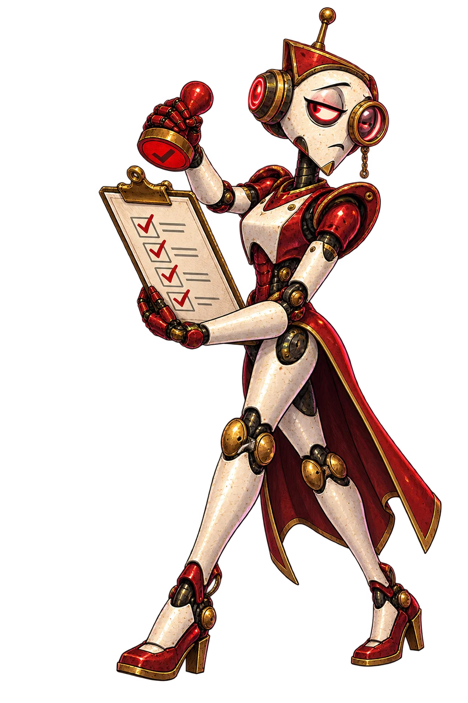
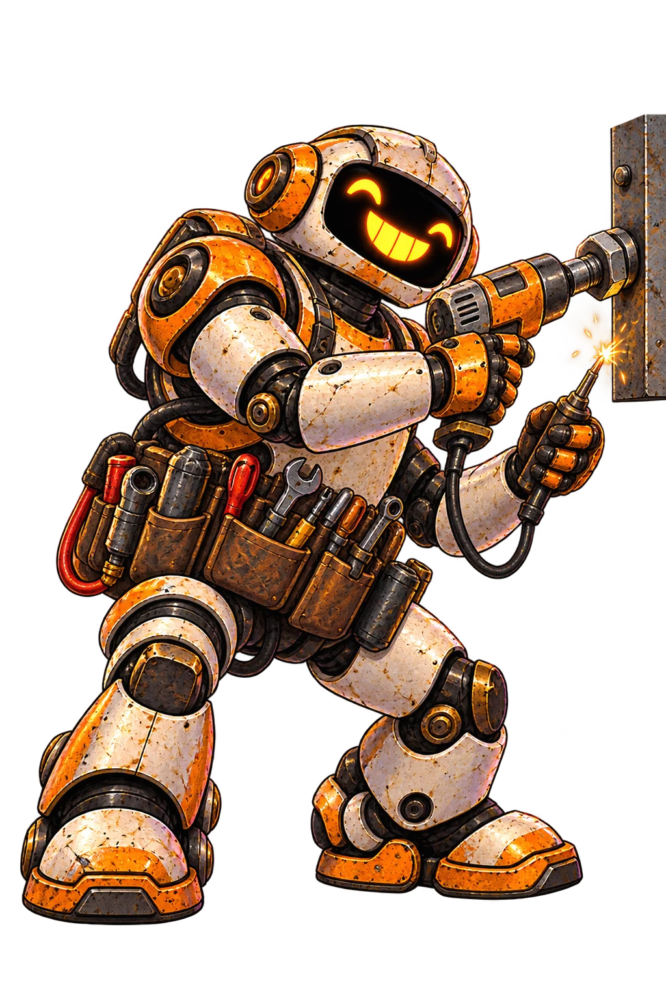
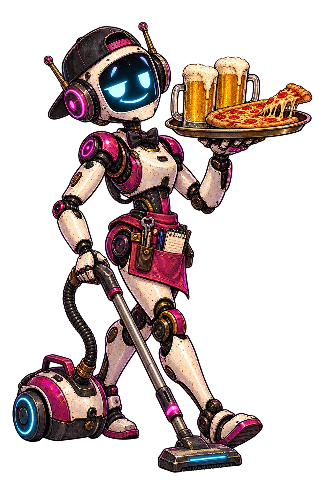
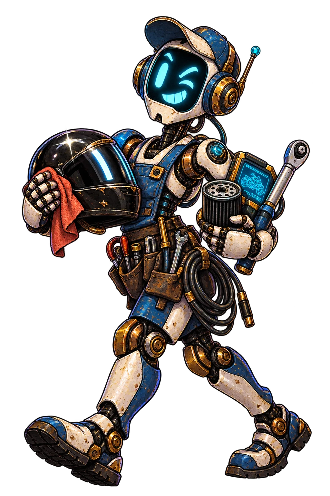

Project to prepared run
Register a repository, configure agent roles, create boards and tasks, then prepare an owned branch and worktree.

Cuckoding

Controlled-beta preparation · local-first · macOS
Register a project, connect the agents already on your Mac, give each one a role, then follow the work from specification to review without losing the durable trail.
Concept artwork · agents work, humans stay accountable
Current situation · September 2026
The current source now carries a project from setup into boards, Draft and Ready tasks, prepared runs, scoped authentication, and operational monitoring. That is implementation evidence—not a public-release claim.
Register a repository, configure agent roles, create boards and tasks, then prepare an owned branch and worktree.
The home dashboard, Agent Floor, run detail, knowledge views, and plugin settings read durable local state.
A fresh signed enrollment build, telemetry-off check, real dogfood runs, sleep and relaunch observations, and interviews remain open.

The current product flow
Setup never fabricates work or starts an agent. Each explicit step snapshots the configuration it needs before execution begins.
Available now
Use the native folder picker, name the project, choose a Git branch, and review. Empty folders, fresh Git repositories, and existing projects are all valid starting points.
Project → Repository → ReviewAvailable now
After registration, project settings opens. Add multiple local agent connections and assign Specifications, Coding, Review, or your own custom roles.
Project settings → Agents → RolesAvailable now
Create one or more boards from a versioned workflow. New tasks begin in Draft, stay editable, and become runnable only after you mark them Ready.
Board → Draft task → ReadyAvailable now
Prepare run creates the owned branch and worktree. Run-scoped authentication still gates launch, while the dashboard and Agent Floor show queued and active work from durable state.
Prepare run → Authenticate → InspectConcept artwork · the neon slogan is satire, not an autonomy claim
Per-project Kanban · available now
Tasks move through explicit stages and gates. Review can send work back with findings or mark it complete. Drag and drop is an enhancement; every task transition also has a labeled form action.

Current operations surface
The home dashboard reports application health, registered projects, queued and active runs, owned processes, ports, and measured memory. Agent Floor adds role, runtime, model when known, elapsed time, usage, blockers, and durable activity—without hidden chain-of-thought.
Concept artwork · scoreboard values are satire, not product telemetry

Optional tools · explicit boundaries
The reference connector layer keeps useful tools optional and bounded: Ponytail can ask for the smallest coherent change, RTK can focus command output, and XERJ can ground unfamiliar work. Each is detected, scoped, health-checked, and replaceable.
Concept artwork · a warning, not a product promise
Current source · six connected capabilities
Repositories, agent connections, custom roles, and immutable configuration revisions.
Draft and Ready tasks, versioned workflows, owned branches, worktrees, and run-scoped launch.
Dashboard, Agent Floor, run inspection, resource samples, usage, artifacts, and findings.
Pause, hibernate, resume, startup reconciliation, sleep-gap records, and process ownership checks.
Markdown truth, extraction, review, growth and lineage views, publication, and usage tracking.
Scoped optional connectors plus a verified tray-only macOS shell and local browser handoff.
The honest boundary
The MVP runs agent processes on your Mac. Worktrees, policy, permission grants, and human gates reduce risk—but the trusted-host runner is not a container or sandbox.
Concept artwork · the trusted-host boundary remains real
Human ideas · agent crew · durable evidence
Cuckoding is open source and preparing for controlled beta. No public release download yet.
Follow development on GitHub